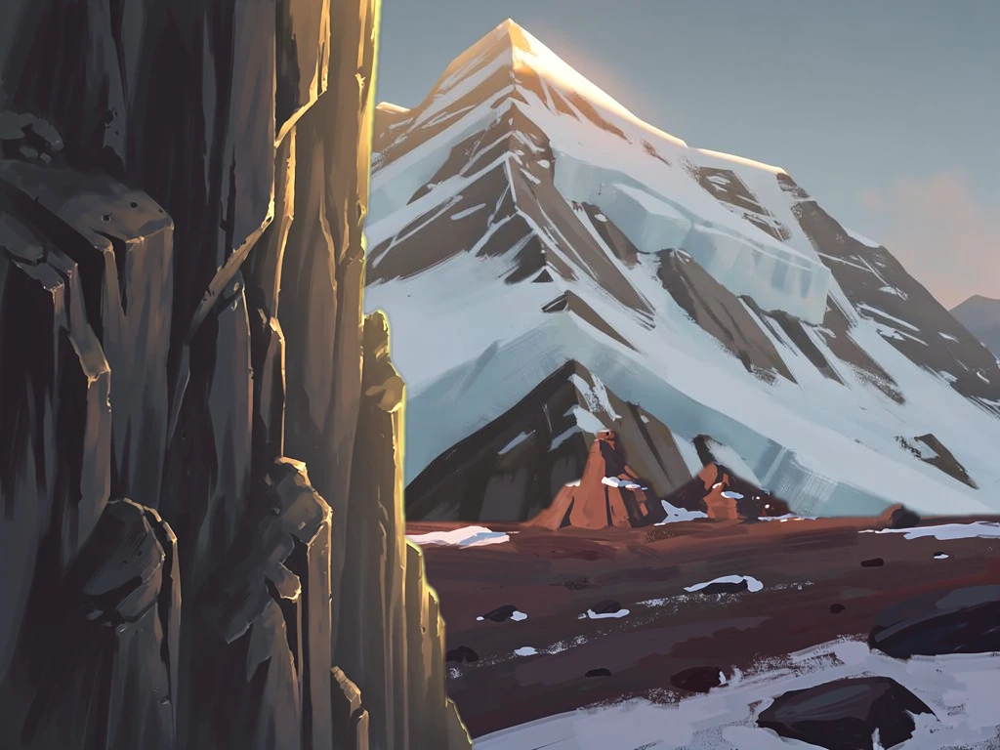
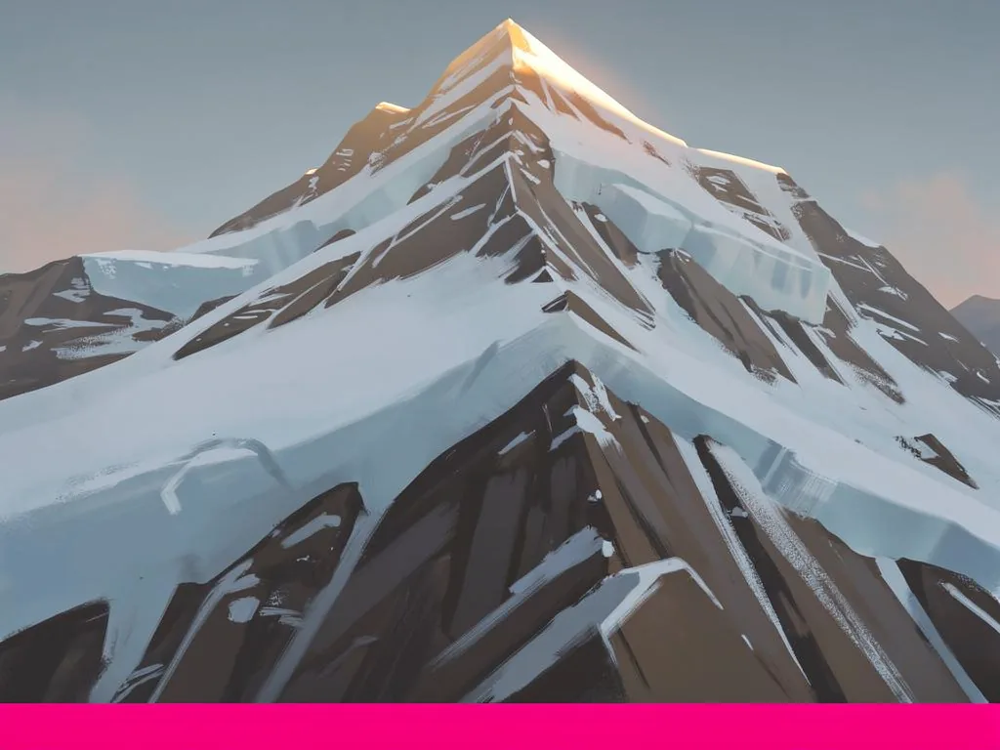
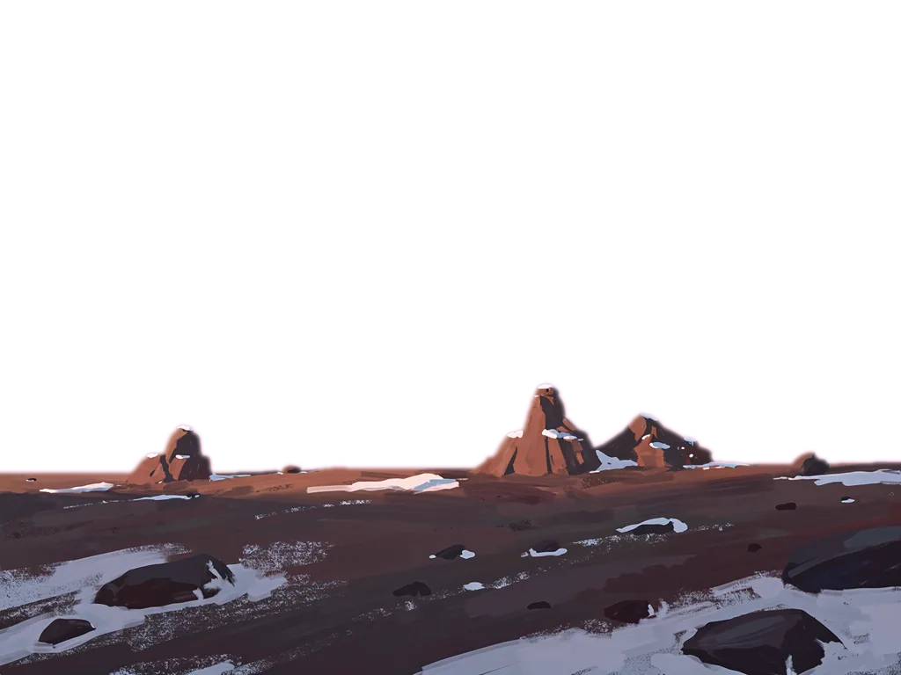
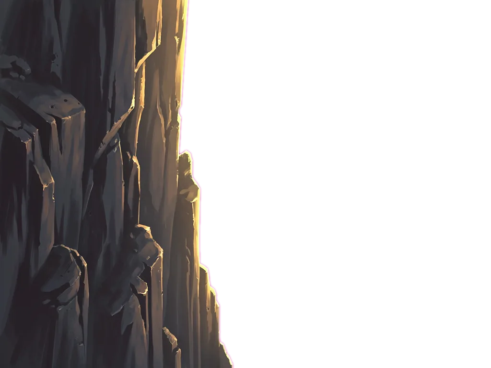

Apu v4 composite preview
Gate 7 (composite) visual QA. Alle drie variants tonen dezelfde mountain-face en plateau — verschil zit in positie van het framing-rock layer.
Rock volledig off-screen
Rock @ x=-512 → 0 opaque px op canvas. Rock zat in source left 40%; bij -512 shift valt alles buiten het zichtbare gebied.
Rock als partial framing

Rock @ x=-200 → ~161k opaque px. Rock ~20% off-screen links, rest frameert het linker deel.
Rock volledig binnen frame

Rock @ x=0 → ~315k opaque px. Rock volledig zichtbaar, neemt linker 40% van frame in.
Mijn inschatting: Variant B (x=-200) geeft het "ik sta naast een cliff die doorloopt buiten beeld" gevoel het sterkst — dat is het framing effect dat we wilden. Variant C is mooi maar de rock voelt dan als een object in het frame, niet als een edge-voorbij-zicht-moment. Variant A is leeg (rock onzichtbaar). Als B te veel ruimte afsnijdt (text-safe zone voor "Apu" toponym wordt te klein), proberen we x=-120 of x=-80.
Individual processed layers (alpha channels zichtbaar op checkerboard)
apu-mountain-face.webp

100% opaque · 44.4 KB · no chroma detected
apu-plateau.webp

32.5% opaque · 33.0 KB · chroma RGB(218,57,150) removed
apu-framing-rock.webp

40.2% opaque · 24.8 KB · chroma RGB(251,5,183) removed